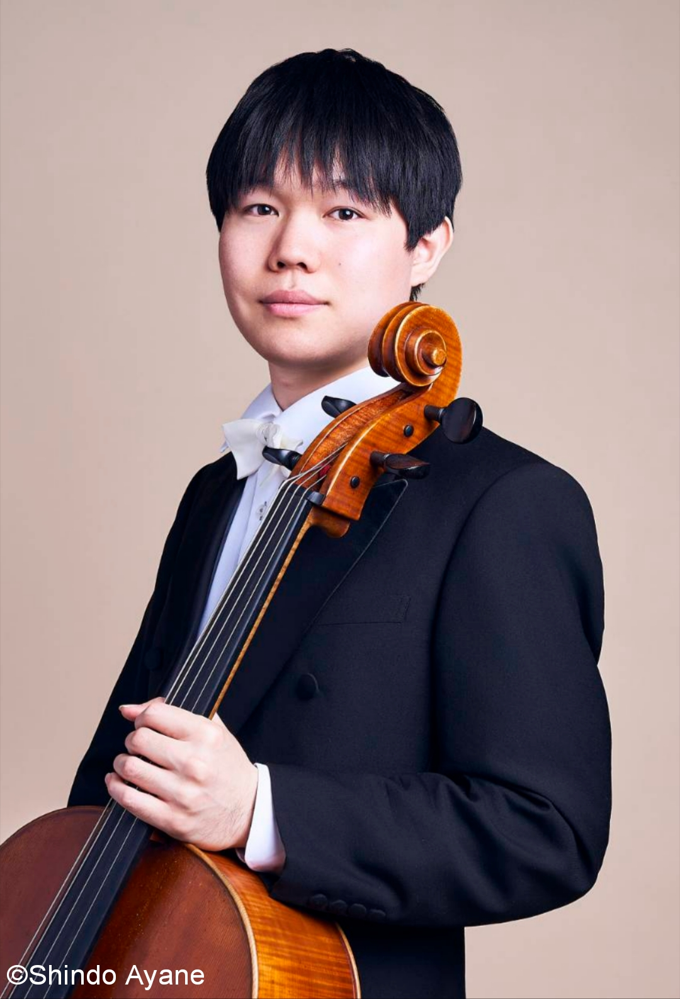

PROFILE

髙木優帆 Yuho Takagi
愛知県出身。
12歳よりチェロを始める。ザルツブルク・モーツァルト国際室内楽コンクール、ベヒシュタイン室内楽コンクールで最高位受賞。
ドヴォルザーク、シューマン、チャイコフスキーのチェロ協奏曲をオーケストラと共演。 アントニオ・メネセス、シュテファン・コンツ、宮田大各氏のマスタークラスを受講。 チェロを故山田知野子、上森祥平、河野文昭の各氏に師事。東京藝術大学卒業。
サントリー室内楽アカデミー第8期フェロー。現在神奈川フィルハーモニー管弦楽団次席チェロ奏者。